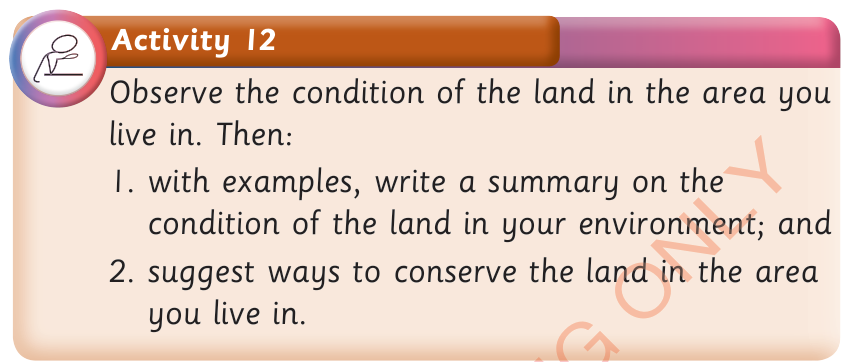

Land conservation in our environment

Activity 12
Observe the condition of the land in the area you live in.
Then:
1. with examples, write a summary on the condition of the land in your environment; and
2. suggest ways to conserve the land in the area you live in.